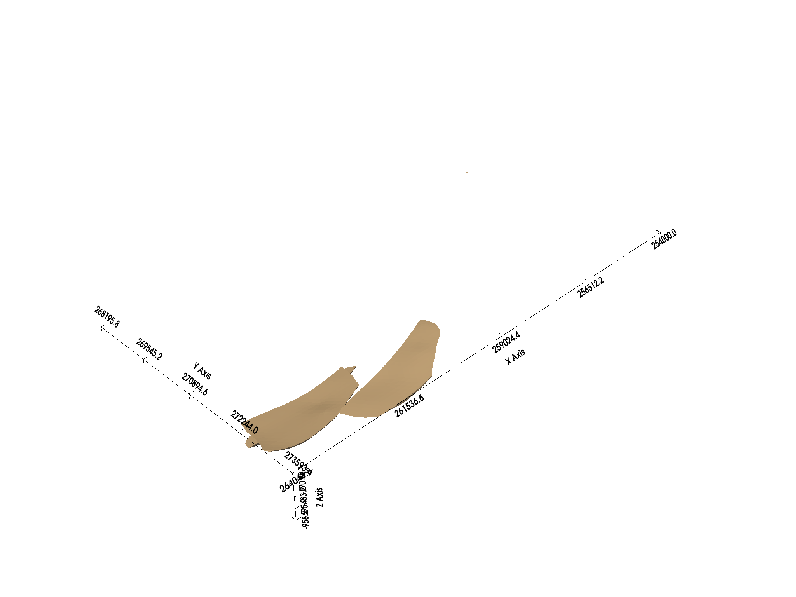

Note
Go to the end to download the full example code
Reading COLLINSTOWN OMF project¶
This tutorial demonstrates how to read an OMF project file in COLLINSTOWN.
Required Libraries:¶
Import the required libraries.
import omfvista
import pyvista
import subsurface
from subsurface import TriSurf
from subsurface.visualization import to_pyvista_mesh, pv_plot
from subsurface.writer import base_structs_to_binary_file
from dotenv import dotenv_values
/home/leguark/subsurface/subsurface/reader/__init__.py:14: UserWarning: Welly or Striplog not installed. No well reader possible.
warnings.warn("Welly or Striplog not installed. No well reader possible.")
Load OMF Project:¶
Load the OMF project using a fixture.
Read OMF with PyVista:¶
Visualize the OMF project with PyVista.
omf.plot(multi_colors=True, show_edges=True, notebook=False)
Convert OMF to Unstructured Single Block:¶
Convert the loaded OMF project into an unstructured single block for further analysis.
block_name = omf.get_block_name(4)
polydata_obj: pyvista.PolyData = omf[block_name]
unstruct_pyvista: pyvista.UnstructuredGrid = polydata_obj.cast_to_unstructured_grid()
cells_pyvista = unstruct_pyvista.cells.reshape(-1, 4)[:, 1:]
unstruct: subsurface.UnstructuredData = subsurface.UnstructuredData.from_array(
vertex=unstruct_pyvista.points,
cells=cells_pyvista,
)
if False: # Replace with condition for exporting to Liquid Earth
base_structs_to_binary_file("leapfrog1", unstruct)
Visualize Unstructured Data:¶
Use Subsurface and PyVista to visualize the unstructured data.
<pyvista.plotting.plotting.Plotter object at 0x7f3754893a60>
Total running time of the script: ( 0 minutes 2.498 seconds)